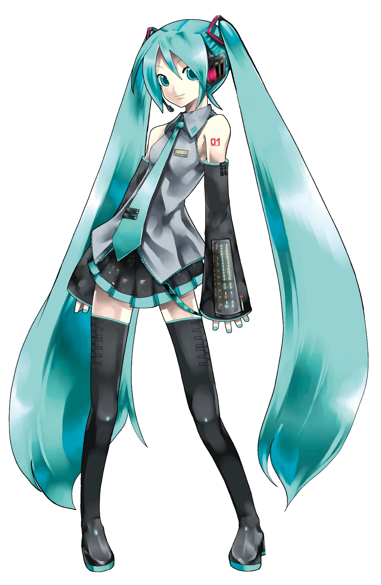

TRACK 01 / 2007
みくみくにしてあげる♪
把你 MikuMiku 掉♪ —— ika
早期投稿里最先把「みくみく」变成全民口头禅的一首，初音热潮的第一声号角。
世界でいちばんおひめさま —— 世界第一的公主殿下。
从札幌一间小公司里被写出来的声音，最后唱进了全世界的体育馆。
名字、身高体重、生日、声源、代表曲、设定背景 —— 一条都不少。下面这张表，就是「初音ミク」这台机器的全部铭牌。

她的曲库里躺着几十万首投稿。下面这十二首，是把「初音ミク」三个字钉进音乐史的那几颗钉子。
早期投稿里最先把「みくみく」变成全民口头禅的一首，初音热潮的第一声号角。
「メルト 溶けてしまいそう」—— 一首把 VOCALOID 从玩具变成流行音乐的歌。
「世界でいちばんおひめさま」—— 从此「公主殿下」成了她的官方外号。
BPM 245 的极限吐字，被公认「人类唱不出来」的那首歌。她在歌里把自己唱到消失。
最早期代表作之一：「私は歌う、あなたのために」—— 一句话定义了虚拟歌手的使命。
沉进海底的少女与光。她证明了自己不只会卖萌，也能唱最沉的情绪。
和风 × 摇滚的现象级神曲，全球翻唱与演奏版本多到数不清，演唱会永远的必点曲。
「伝えたいことがあるんだ」—— 她把这首歌带出了屏幕，唱进了全世界的浏览器里。
写给「创作者与他的虚拟歌手」的情书。副歌那句告白，是整代 P 主的心声。
歌名就是她的名字：39 = ミク = サンキュー。一首全员对着观众席唱的感谢歌。
「マジカルミライ 2017」主题曲。出道十年的初音，被写进了一首关于时代的叙事诗。
进入令和，她依然是短视频与榜单的中心。新一代 P 主照样把最尖的声音交给她唱。
她不是某部动画的女主角，没有剧情，没有结局。她的设定只有一个起点 —— 剩下的，全人类一起写。
初 = 最初の音（第一个声音），音 = 声音，ミク = 未来。
连起来就是「从未来传来的第一个声音」。Crypton 的企划者给她起名时，就已经把整个世界观塞进了四个字里：她不是被造出来的角色，她是被「未来的声音」这个概念本身推出来的歌手。
札幌的 Crypton Future Media 用 Yamaha 的 VOCALOID2 引擎做出了一款软件，编号 CV01，声源是声优藤田咲，角色设计是插画师 KEI，售价 ¥15,750。
发售当时没人觉得这东西能改变什么。它只是一款「输入歌词和旋律就会唱歌」的工具。
关键不是技术，是授权。Crypton 用「ピアプロ・キャラクター・ライセンス（PCL）」把她的形象开放给粉丝：只要是非商业创作，谁都可以画她、写她、让她唱自己的歌。
于是 niconico 上的投稿像雪崩一样涌来，2007 到 2008 年成了「ボカロ」黄金期。别人在卖软件，她变成了一整个创作生态。
全息投影把她搬上了真实舞台：マジカルミライ 成为每年最大规模的祭典，HATSUNE MIKU EXPO 从 2014 年起把巡演开到了北美、欧洲与亚洲。
到 2026 年的北美巡演收官时，累计动员约 10 万人。一个不存在的人，在体育馆里让十万人一起喊安可。
年龄被永远钉在 16 岁，但引擎一直在换：VOCALOID2 → Append → V3 → V4X → NT → V6。
外形一步没改，声音越唱越像人。这就是她的设定核心：永远不长大的少女，永远在变强的嗓子。
法律上，她的形象属于 Crypton Future Media；实际上，她是几万个创作者共同养大的存在。
官方给她人设，粉丝给她灵魂。每一次有人在深夜打开软件敲下第一个音符，她就重新出生一次。
「我不是被画出来的偶像，我是你按下播放键的那一刻，才存在的声音。」
— 本页文案 / 非官方台词 · HATSUNE MIKU · 39
十九年，二十个节点。鼠标划过每一行，她都会往你这边挪一步。
同一个她，不同年代的官方笔触。左右拖拽或滚动查看，鼠标压上去会亮起来。